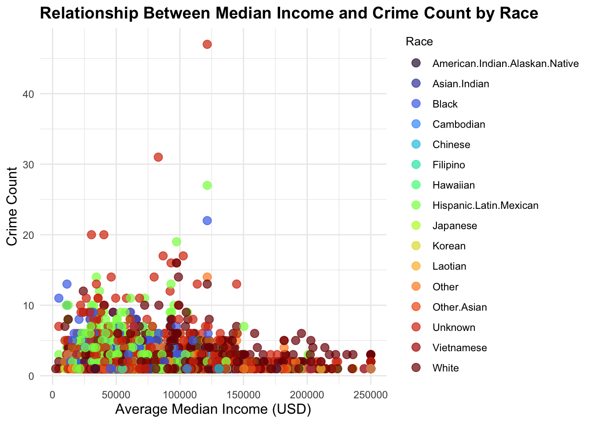
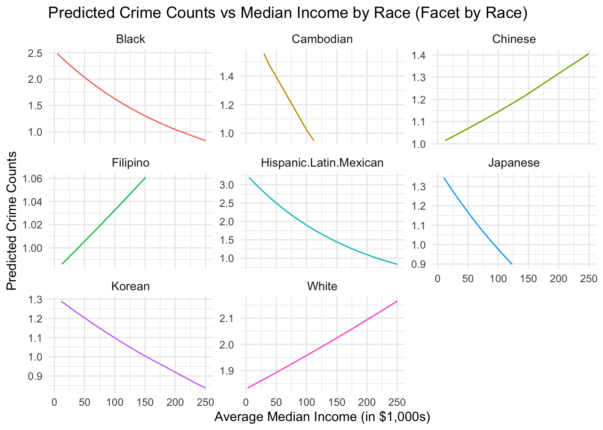
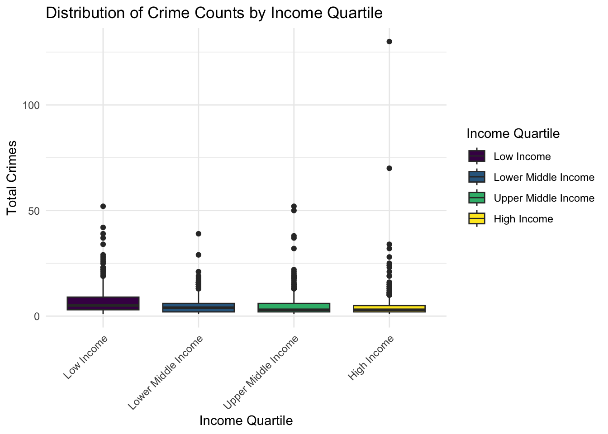

Analysis
Here we provide a detailed analysis using more sophisticated statistics techniques.

This comes from the file analysis.qmd.
We describe here our detailed data analysis. This page will provide an overview of what questions you addressed, illustrations of relevant aspects of the data with tables and figures, and a statistical model that attempts to answer part of the question. You’ll also reflect on next steps and further analysis.
The audience for this page is someone like your class mates, so you can expect that they have some level of statistical and quantitative sophistication and understand ideas like linear and logistic regression, coefficients, confidence intervals, overfitting, etc.
While the exact number of figures and tables will vary and depend on your analysis, you should target around 5 to 6. An overly long analysis could lead to losing points. If you want you can link back to your blog posts or create separate pages with more details.
The style of this paper should aim to be that of an academic paper. I don’t expect this to be of publication quality but you should keep that aim in mind. Avoid using “we” too frequently, for example “We also found that …”. Describe your methodology and your findings but don’t describe your whole process.
Example of loading data
Relationship between crime and median income

Graph explanation: The color from dark to bright means median income from low to high.
The graph shows that there is no clear relationship between median income and total crimes based on the data points presented. While there is a general trend of lower median incomes associated with higher total crimes, there are several outliers that do not fit this pattern. Some areas with relatively high median incomes also have high total crime rates, and vice versa. This suggests that factors beyond just income level likely play a significant role in determining crime rates within a community. Simply assuming that higher-income neighborhoods will have lower crime rates oversimplifies the complex social, economic, and environmental factors that contribute to public safety. A more nuanced analysis would be needed to fully understand the relationship between these variables across different geographic areas. Our team decide to investigate the frequent of property crime by the each neighborhood that sort by their median income.
Violent crime in each neighborhood order by their income

Graph explanation: The x-axis(areas) are order in ascending median income order, which we will expected from left to right neighborhood, the count of property crime will increase.
The chart reveals a notable outlier: the Central neighborhood, which reports a disproportionately high number of violent crimes relative to its median income. While the general trend aligns with the assumption—often rooted in societal stereotypes—that lower-income neighborhoods experience higher levels of violent crime, Central deviates from this expectation. Despite not having the lowest median income, its violent crime rate far exceeds those of other neighborhoods. This suggests that relying solely on income as a predictor of crime may oversimplify a more complex issue. Factors such as geographic location, population density, proximity to transit hubs, or the concentration of commercial and nightlife activities might better explain the elevated crime rate in Central. This highlights the importance of challenging stereotypes and exploring a broader range of influences when analyzing crime patterns.
Crime count distribution in heatmap

This heatmap visualizes the spatial distribution of total crimes across neighborhoods under the LAPD jurisdiction, with higher crime rates indicated by brighter yellow hues and lower crime rates shown in darker purple. The outlier observed in the previous bar chart, Central, is corroborated here as one of the brightest regions on the map, indicating a notably high concentration of crimes.
When connecting this to the previous graph, we see that Central’s geographic location likely plays a significant role in its elevated crime levels. The neighborhood’s centrality and potential proximity to high-density areas, transit hubs, or commercial districts could contribute to the high crime numbers. This geographic clustering of crime challenges the stereotype that violent crime is solely tied to lower-income areas, as Central’s median income is not the lowest yet its crime rate is disproportionately high. It suggests that spatial dynamics, such as the presence of key urban features and high activity zones, may compound the crime rate independent of income alone.
income_inequality <- crime_with_income %>%
group_by(AREA.NAME) %>%
summarize(
income_range = max(estimate, na.rm = TRUE) - min(estimate, na.rm = TRUE),
total_crimes = n()
)
ggplot(income_inequality, aes(x = income_range, y = total_crimes)) +
geom_point(alpha = 0.7) +
geom_smooth(method = "lm", se = FALSE, color = "red") +
labs(
title = "Income Inequality vs. Total Crimes",
x = "Income Range (Proxy for Inequality)",
y = "Total Crimes"
) +
theme_minimal()`geom_smooth()` using formula = 'y ~ x'
In our earlier analysis, we observed that economic factors, such as median income, play a role in shaping crime dynamics. Here, we extend our exploration to examine whther socioeconomic inequality within neighborhoods might also contribute to crime disparities. The figure above examines the relationship between income inequality and the total number of crimes in neighborhoods. The red line shows a slight negative slope, suggesting that as income inequality increases, total crimes tend to decrease marginally. The data points are widely scattered around the line, reflecting significant variability in total crimes across neighborhoods with similar income ranges. This implies that factors beyond income inequality likely influence crime rates.
What Motivated Our Data Analysis:
Crime is a pervasive issue that affects communities differently based on various socioeconomic, demographic, and geographic factors. Understanding what drives crime frequency is crucial for developing effective policies and interventions to promote equity and public safety.
Our data analysis was motivated by the desire to uncover relationships between crime and the following key factors:
Economic Status (e.g., median income)
Demographics (e.g., racial composition)
Location (e.g., neighborhood characteristics)
Variables of Interest
The primary variables we analyzed included:
Crime Frequency: The total number of reported crimes in a neighborhood.
Economic Data: Median household income from the American Community Survey (ACS).
Neighborhood Boundaries: Spatial boundaries defined by the LA Times.
Location Data: Geospatial coordinates (latitude and longitude) for reported crime incidents.
#Add to here as necessary
To explore these variables, we integrated datasets from LAPD crime reports, U.S. Census economic data, and geospatial shapefiles for Los Angeles neighborhoods. This allowed us to analyze both spatial and statistical relationships.
#Add links here
Key Questions
Economic Status and Crime: Does a neighborhood’s median income influence the number of crimes reported?
Geographic Crime Hotspots: Are there specific areas with persistently high crime rates?
Disparities in Crime Impact: How do demographic or socioeconomic disparities correlate with crime? #Add here as necessary
Modeling and Inference
Motivation for the Model
We aim to understand the relationship between median income and crime, considering racial demographics as a moderating factor. This requires modeling total crimes as a function of average median income and racial groupings. To account for overdispersion in crime count data, we employ both Poisson regression and Negative Binomial regression frameworks.
Model Selection
Why Poisson and Negative Binomial Models?
Crime counts are discrete and non-negative, making Poisson regression an intuitive starting point.
Overdispersion (variance exceeding the mean) was evident, prompting the use of a Negative Binomial regression model. Predictors Considered
Median income: Hypothesized to influence crime rates inversely.
Race: Used as categorical predictors to examine demographic disparities in crime incidence.
Interaction terms: Incorporated to explore how income effects vary across racial groups.
Modeling Steps
Poisson regression model:
Coefficients:
- avg_median_income: -0.0019821 (p < 0.001, significant)
- raceBlack: 0.6206 (p = 0.007, significant)
- raceHispanic.Latin.Mexican: 0.8102 (p < 0.001, significant)
- raceUnknown: 0.7717 (p < 0.001, significant)
- raceWhite: 0.6654 (p = 0.004, significant)
Model Metrics:
- Null deviance: 6300.2 on 5907 degrees of freedom
- Residual deviance: 5790.0 on 5891 degrees of freedom
- AIC: 20106
Key Insights:
avg_median_income is negatively associated with crime counts and is statistically significant.
Certain racial categories (raceHispanic.Latin.Mexican, raceUnknown, raceWhite, and raceBlack) are positively associated with higher crime counts and are statistically significant.
Negative Binomial regression model:
Coefficients:
- raceHispanic.Latin.Mexican: 1.0450 (p = 0.013, significant)
- raceUnknown: 0.7903 (p = 0.061, marginally significant)
- raceBlack: 0.7862 (p = 0.064, marginally significant)
Model Metrics:
- Null deviance: 4800.1 on 5907 degrees of freedom
- Residual deviance: 4305.8 on 5877 degrees of freedom
- AIC: 19758
- Dispersion parameter: Theta = 9.252 (SE = 0.706)
Key Insights:
raceHispanic.Latin.Mexican remains statistically significant and positively associated with crime counts.
The inclusion of overdispersion (via the Negative Binomial model) leads to better model fit metrics (lower AIC and deviance) compared to the Poisson regression.
We evaluate model fit using AIC and residual diagnostics, concluding the Negative Binomial model better accounts for data characteristics.
Why Negative Binomial Was Better
Dispersion Issue: The Poisson model assumes that the mean and variance of the dependent variable (crime counts) are equal. However, the data exhibits overdispersion (variance > mean), as indicated by the high residual deviance in the Poisson model.
Model Fit: The Negative Binomial regression explicitly accounts for overdispersion with a dispersion parameter (Theta = 9.252), leading to improved model fit (lower AIC: 19758 vs. 20106 and reduced deviance).
Interpretation: While both models identify significant predictors (e.g., raceHispanic.Latin.Mexican), the Negative Binomial model provides more reliable estimates due to its ability to handle overdispersed data.
Predicted Trends
Using the model, we predict crime counts across income ranges for each racial group:
Warning in predict.lm(object, newdata, se.fit, scale = 1, type = if (type == :
prediction from rank-deficient fit; attr(*, "non-estim") has doubtful casesVisualization

This figure illustrates how income impacts predicted crime counts, highlighting disparities among racial groups.
This also removed any race with a P-Value over 0.8 and any races like “unknown” and “other” because that doesn’t give much information. We can see that for the most part, as median income increases, the likelihood of a crime decreases. This is not the case for White, Chinese, and Filipino which might be worth looking into.
Uncertainty and Limitations
1. Uncertainty in Estimates:
- Wide confidence intervals for certain racial group coefficients suggest variability in observed patterns.
- Limited data for smaller racial groups (e.g., Laotian, Cambodian) may result in unreliable estimates.
2.Model Assumptions:
- Both Poisson and Negative Binomial models assume log-linear relationships, which may oversimplify real-world dynamics.
- Spatial dependencies (e.g., crime clustering in neighborhoods) are not accounted for, potentially biasing results.
3. Data Limitations:
- The dataset has missing values for some predictors, leading to excluded observations.
- Aggregation by neighborhood may obscure within-neighborhood variability in income and crime rates.
Future Directions
- Integrate additional predictors like unemployment rates, educational attainment, or policing density to refine insights.
- Perform robustness checks by using alternative categorizations for racial groups or income brackets.